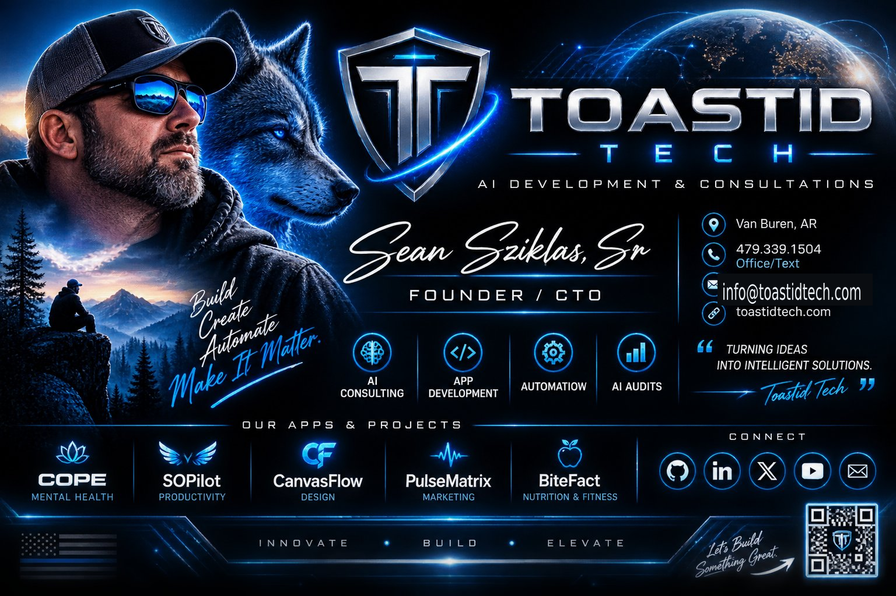

PWA · GUIDE
Why Progressive Web Apps Are Quietly Winning
Why an installable web app can be a smart fit for a small business.
Read the guide →Practical guidance for business owners who want better systems, smarter automation, useful AI, and technology that earns its keep. No buzzword bingo. No 70-page dust collectors.
Start with the problem, not the technology. These resources help you decide whether you need a PWA, an automation, an AI solution, a business audit, or simply a better process.
The best technology is rarely the most complicated option. It is the option that removes friction without creating three new problems.
For hands-on help, see our PWA development service and current apps.
Why an installable web app can be a smart fit for a small business.
Read the guide →A practical way to decide whether a PWA solves a real problem.
Read the guide →The essential pieces between an idea and a useful product.
See what we build →Need a practical assessment? See the business audit service.
Expose wasted time, operational risk, bottlenecks, and missed opportunities.
Read the guide →People, process, technology, data, and customer experience.
Read the guide →An audit should end with decisions, priorities, and next steps.
Build the plan →Ready to improve a workflow? Explore business automation consulting.
Making a bad workflow faster does not make it a good workflow.
Read the guide →Find repetitive, predictable work that steals time every week.
Read the guide →Prioritize workflows by effort, risk, frequency, and business impact.
Map opportunities →For strategy beyond the guides, see AI consulting.
Where AI can create real leverage and where it cannot.
Read the guide →A simple framework for choosing existing software, custom development, or automation.
Read the guide →Define the business outcome first. Then choose the smallest solution that can achieve it.
Find the right solution →The questions people actually ask about Toastid Tech apps — pricing, privacy, and what each one does. No sales pitch, just answers.
The week's AI headlines, translated for people who run businesses — what changed, and why it matters to you.
Anthropic released Claude Opus 5.5 — frontier-grade performance priced 40% below its predecessor, plus new dual-use verification programs for sensitive applications.
OpenAI is moving its latest model beyond chat into autonomous agents that browse the web, operate computers, conduct research, and complete multi-step tasks.
Google is pushing Gemini 3.8 into voice interfaces, deeper reasoning, cybersecurity, and agentic applications.
Meta's Muse is packaging the personal AI agent as a mainstream consumer product, paired with new AI glasses that push the concept beyond the phone.
NielsenIQ reports that 51% of US consumers used an AI tool to shop in the past month — AI-assisted buying has crossed the halfway mark.
Security researcher Gal Weizman disclosed BragJack, a new attack class showing how a single malicious browser extension can seize control of AI agents in Chrome, Edge, and other browsers.
Updated September 25, 2026 · Refreshed every Monday morning.

I'll help you figure out what should be fixed, automated, built, or left the hell alone.